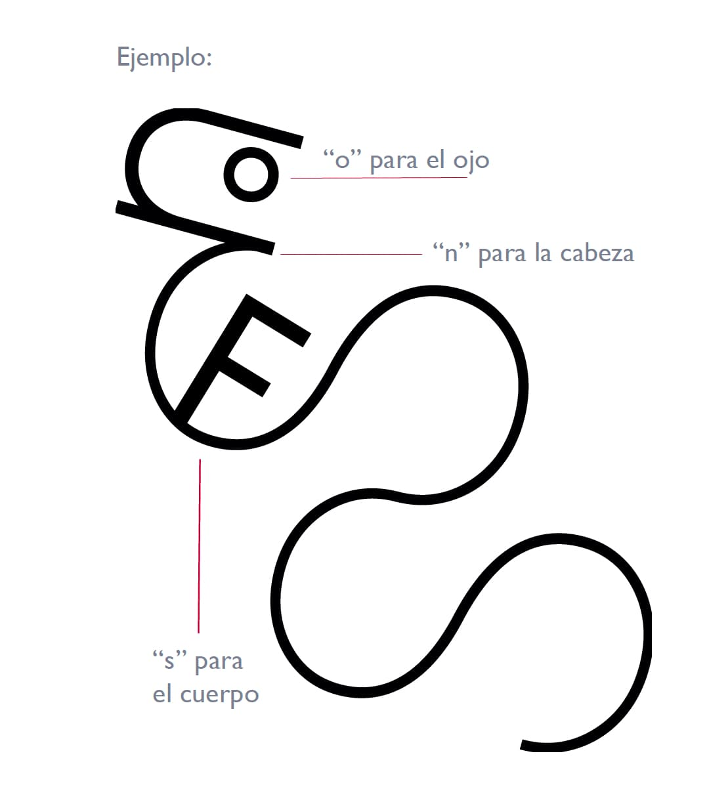
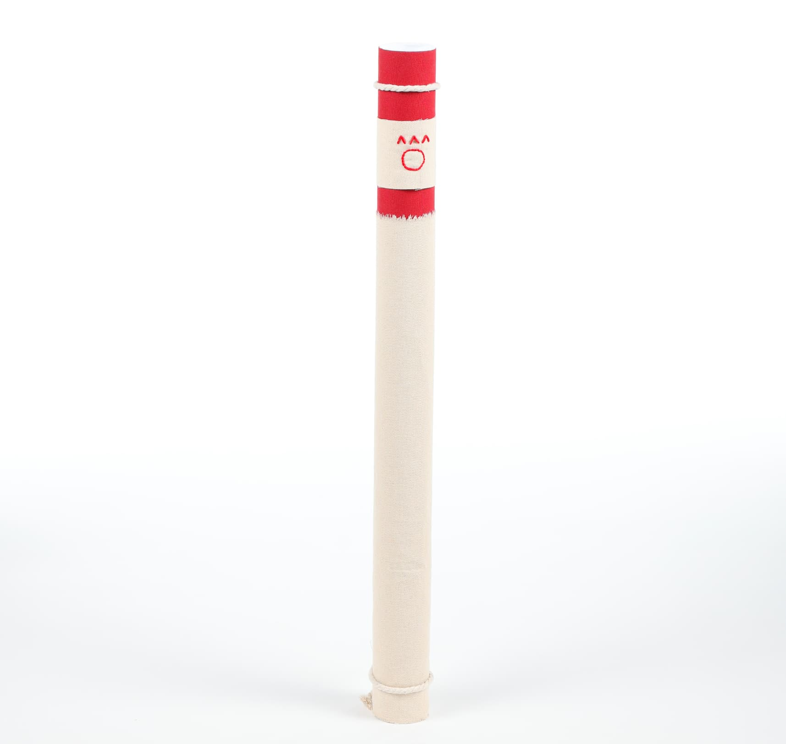
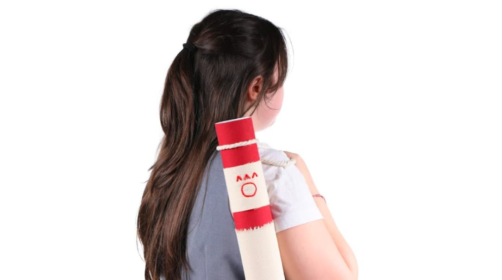
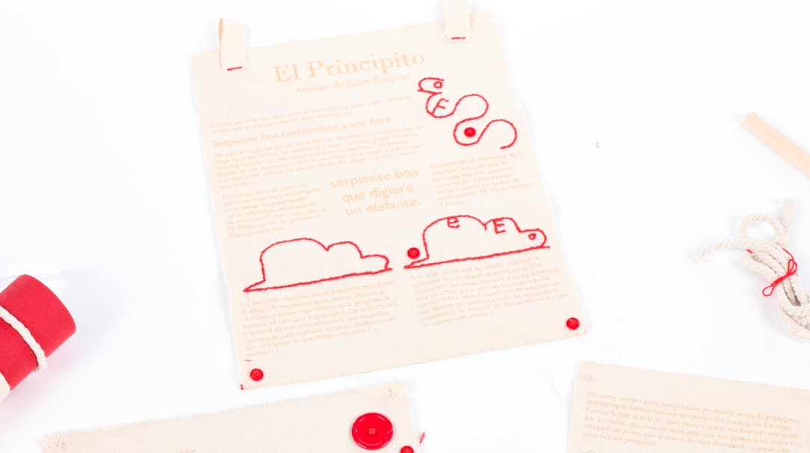

Contexto
Se propone re-imaginar la maquetación del clásico "El Principito" de Antoine de Saint-Exupéry. Como referencia se tomó la estética de los tapices y los pergaminos, ya que resultó interesante interpretar la historia de una manera mucho más artesanal.
Las ilustraciones originales van bordadas en un material de canvas con hilo grueso. Por ello se optó por simplificar las figuras lo más posible, construyendo las siluetas a base de letras y explorando las posibilidades de la tipografía.
Proceso
Algunas partes del texto van cambiando de tamaño o de forma, brindando dinamismo a la maquetación. Las ilustraciones se posicionan adecuándose al texto, y su bordado en hilo rojo se asegura de que tomen protagonismo.
El sistema tipográfico usa Abril para títulos y Gill Sans para el cuerpo de texto. La paleta se reduce a un solo color de acento Rojo Real sobre el fondo natural del canvas.


Resultado
El resultado es un libro-objeto maquetado sobre canvas, con las ilustraciones bordadas en hilo rojo y el texto impreso sobre el material. El formato de pergamino enrollado refuerza la narrativa artesanal y atemporal del proyecto.


Ficha técnica
- Año
- 2025
- Asignatura
- Tipografía
- Categoría
- Diseño de Producto, Storytelling
- Herramientas
- Adobe InDesign, Illustrator